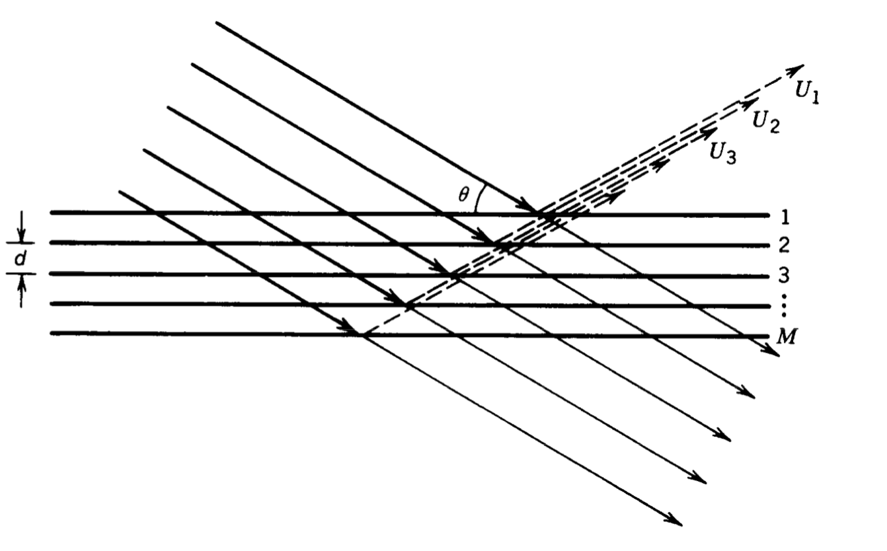
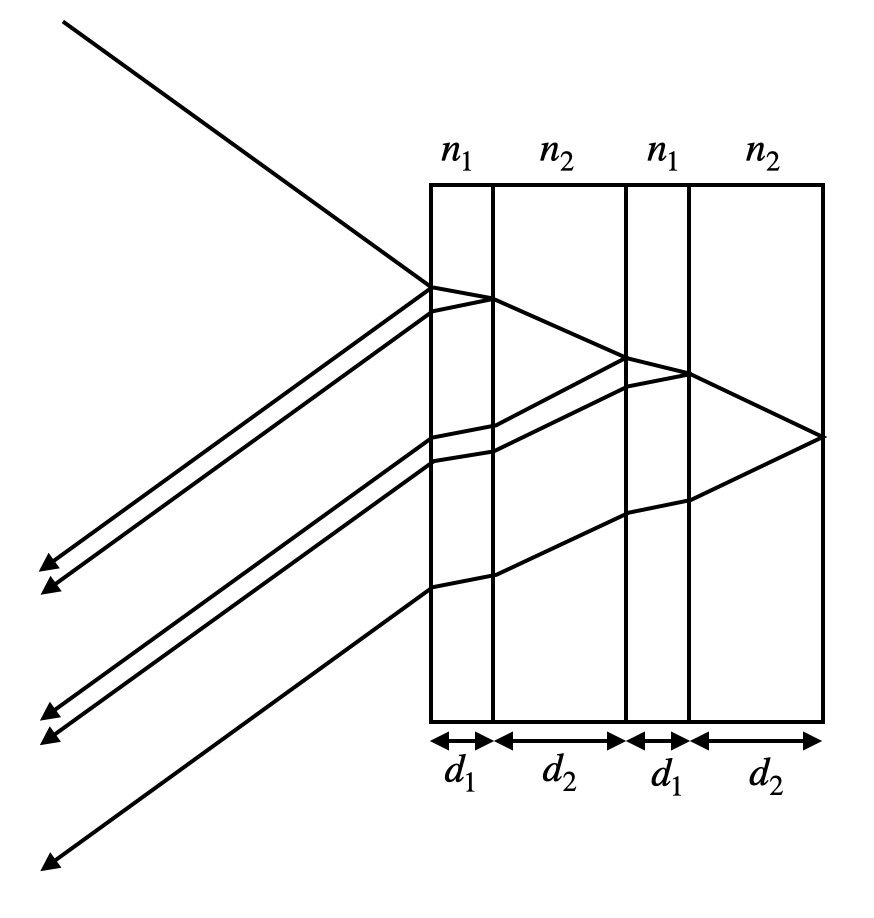

This page was generated from `source/notebooks/L11/Interference.ipynb`_.

Fabry Perot Interferometer¶
We will now have a look at some applications of the multiwave interference also with changing amplitude. One of the is the Fabry-Perot interferometer, which essentially consists of two mirrors, which are brought to a distance \(d\) as shown below.
|
|---|
Fig.: Fabry-Perot Interferometer. |

If light enters the Fabry Perot interferometer with an amplitude \(A_0\). It is transmitted with a reduced amplitude. The initial amplitude has to be multiplied with the transmission factor \(t_1\). It travels further until it hits the sescond mirror, where it is reflected and transmitted as well. The reduced amplitude due to reflection is expressed by \(r_2\), while the transmission is introducing another factor \(t_2\). This means that the first transmitted wave has the amplitude
The second transmitted wave now has a decreased amplitude as compared to the first one and reads
We could now continue like that, but we see already at this point the similarity to the multiwave interference with decreasing amplitude we have talked about in the last lecture. We would observe interference of all transmitted waves
We just have to insert the corresponding expression, i.e. \(\sqrt{I_0}=A_0 t_1 t_2\) and \(h=r_1r_2e^{i\phi}\) or \(r=r_1 r_2\). We may even insert the phase shift
Our final formula would thus look like
and gives now the intensity as calculated during the last lecture.
|
|---|
Fig.: Fabry Perot Interferometer. |

Yet, we know now that \(r=r_1 r_2\) is the factor by which the amplitude decreases, which also enters the Finesse
The better the reflectivity of the mirrors (which means \(r\rightarrow 1\)), the higher is the Finess and the sharper are the interference peaks observed in the Fabry-Perot interferometer.
Let us discuss the form of the interference peeks and the distance a bit more in detail. We have plotted so far the intensity as a function of the phase angle \(\phi\). This phase angle is given by
We would like to have a look at the transmission in the case of normal incidence \(\theta=0\), so that \(\phi=4\pi d/\lambda\). To obtain constructive interference in transmission, the phase angle needs to be an integer multiple of \(2\pi\), i.e. \(\phi=m 2\pi\). This means that for a given thickness \(d\) and a specific integer value \(m\), the transmission is maximum for
We may then calculate the distance of the constructive interference maxima for neighboring values of the interference order \(m\). A quick calculation gives
We may also do the calculation in the frequency space. A wavelength \(\lambda_m\) corresponds via the relation \(\nu=c/\lambda\) to \(\nu_m=\frac{c\, m}{2d}\). The difference between neighboring frequencies is then
This quantity \(\delta \nu\) or \(\delta \lambda\) is called free spectral range as it indicates the “space” we have until the next frequency delivers a constructive interference maximum for the next integer \(m\). In this range, we would like to resolve two different frequencies. So let us assume we would like to resolve two frequencies \(\nu_a\) and \(\nu_b\) with the same order of the interference \(m\), then we have to find a criterium, that tells us, that we can still seperate the two frequencies. We use as a measure the width of the individual peaks. We measure the width as the full width at half maximum (FWHM), this means, we look for the phase angle \(\phi_{1/2}\) at which we have \(I/I_{\rm max}=1/2\), i.e.
using the small angle approximation \(\sin(\phi)\approx\phi\).This results in an angle \(\phi_{1/2}= \frac{\pi}{\mathcal{F}}\) for the half width. The full width is thus twice this values, i.e. \(2\frac{\pi}{\mathcal{F}}\). This full width corresponds also to a width in frequency space \(\Delta \nu\), which with our conversion formula \(\phi=4\pi\nu d/c\) yields
This actually directly gives a definition for the Finesse.
This means that the Finesse gives us a measure for the spectral resolution of a Fabry-Perot-Interferometer. It tells us by how much the free spectral range $:nbsphinx-math:delta `:nbsphinx-math:nu $ is bigger than the width :math:Delta nu` of the interference maximum.
More generally this is measured by the resolving power \(\mathcal{R}\), which is given for the Fabry-Perot-Interferometer
where \(m\) is again the interference order \(m\), we defined above.
|
|---|
Fig.: Fabry Perot Interferometer. |

|
|---|
Fig.: Fabry Perot Interferometer and interferebnce pattern observed in the lecture . |


Newton Rings¶
|
|---|
Fig.: Observation of Newton Rings using white light in the lecture. |

Bragg reflection¶
The Bragg reflection is a typical example in which we assume that the amplitude of the waves interfering is constant. Remember the image below, which we already discussed in the previous lecture
 |
|---|
Fig.: Bragg reflection. |
We obtained earlier, that constructive interference will occur if the path difference \(\Delta s\) of neighboring waves (e.g. \(U_1\) and \(U_2\)) in just an integer multiple of the wavelength \(\Delta s=m\lambda\). For the picture above, we may easily calculate the pathlength difference (the distance between the blue lines \(\Delta s_1+\Delta s_2\)), which is given by the angle of incidence \(\theta\) (note that it is measured to the plane and not to the normal here!) and the distance between the horizontal planes \(d\). According to that we find that
Bragg reflection
A Bragg reflection occurs on a periodic arrangement of reflecting objects with a spacing \(d\) undern an incident angle \(\theta\) to the plane if
which is known as the Bragg equation.
This law of Bragg reflection is the foundation for the structural analysis using X-rays, for example. If we assume that the periodic arrangement of objects is a lattice of atoms, the the reflection is microscopically related to the scattering of the X-rays on the atoms in the lattice. The atoms thereby act as sources of spherical waves, which in the far-field (infinite distance) can be treated as plane waves interfering. If we observe therefore a constructive interference from such a lattice structure under an angle \(\theta\), we may deduce the lattice constant \(d\) when we know the wavelength \(\lambda\).
|
|---|
Fig.: Bragg reflection principle. |

In a real atomic lattice, atoms are arranged in more complex periodic structures than shown in 2 dimensions above. In X-ray scattering pattern is therefore a chracteristic dot pattern on the surface of a sphere. You will extend this picture later in the course on Solid State Physics. More generally you may see X-ray scattering also as diffraction on a 3-dimensional grating.
|
|---|
Fig.: One of the first recorded X-ray scattering patterns from a platinum lattice. |

The image below shows the experiment from the lecture, where the periodic structure is given by a stack of acrylic sheets, with constant separation. A microwave is incident to the stack. Each sheet is reflecting a tiny fraction of the wave so that the transmitted wave by a sheet is almost the original one.
|
|---|
Fig.: Microwave reflection from a stack of acrylic glass sheets. Butterfly wing reflection corresponding to a 3D Bragg reflection from a complex structured dielectric lattice. |

As a result we obtained for certain angles constructive interference in reflection, which is a Bragg reflection as well. Note that we used here Microwaves as radiation, as these waves have a wavelength of several centimeters. We may therefore arrange the objects at a distance of centimeters (have a look at the Bragg equation again).
Bragg Mirros, Photonic Crystals and Anti-Reflection Coating¶
We may also prepare structure, which are periodic and act on optical waves, i.e. on waves in the visible regions. There we create stacks of materials with different refractive index. At each interface waves are reflected. As compared to the X-ray situation, light is also refracted. This
 |
|---|
Fig.: Optical multilayer structure of layers with different refractive index. |

[ ]: